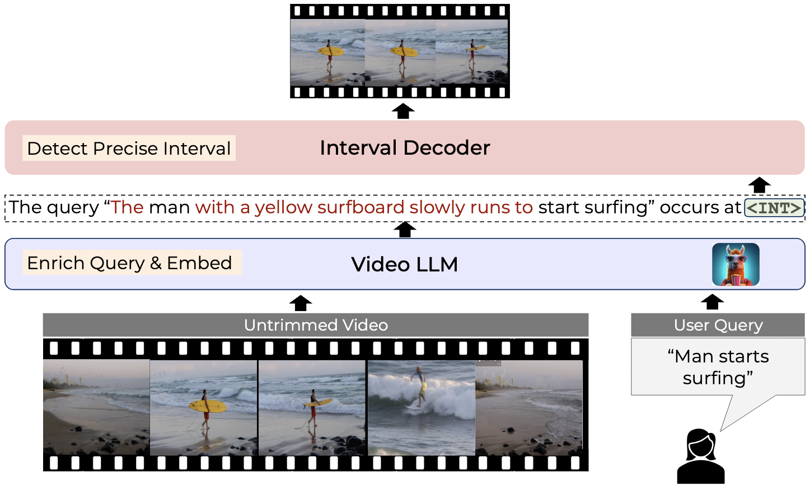
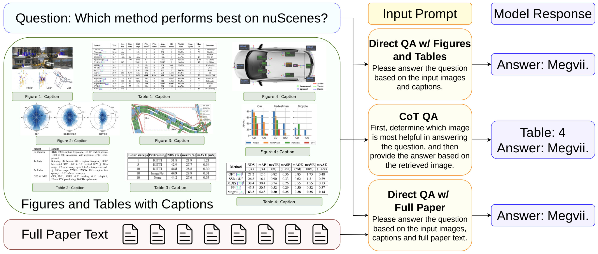
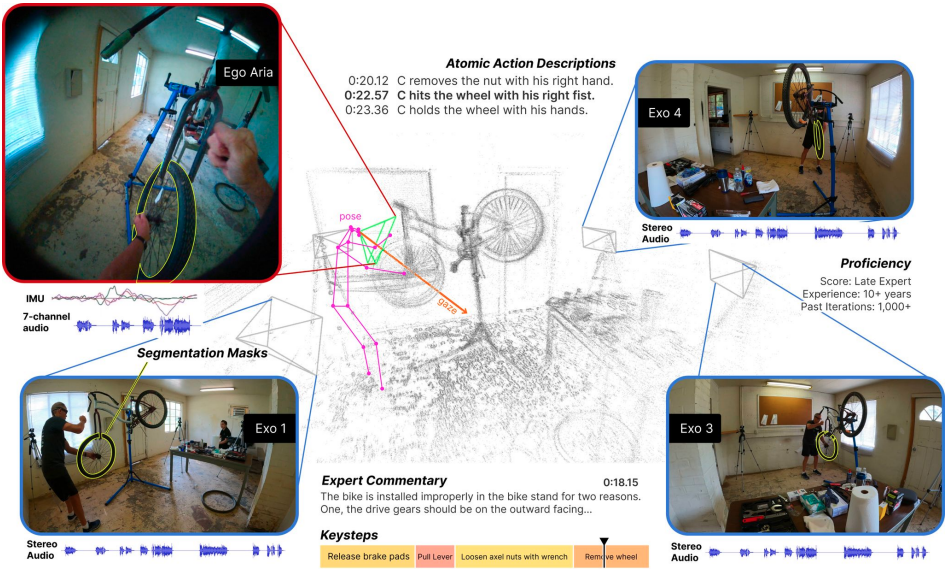
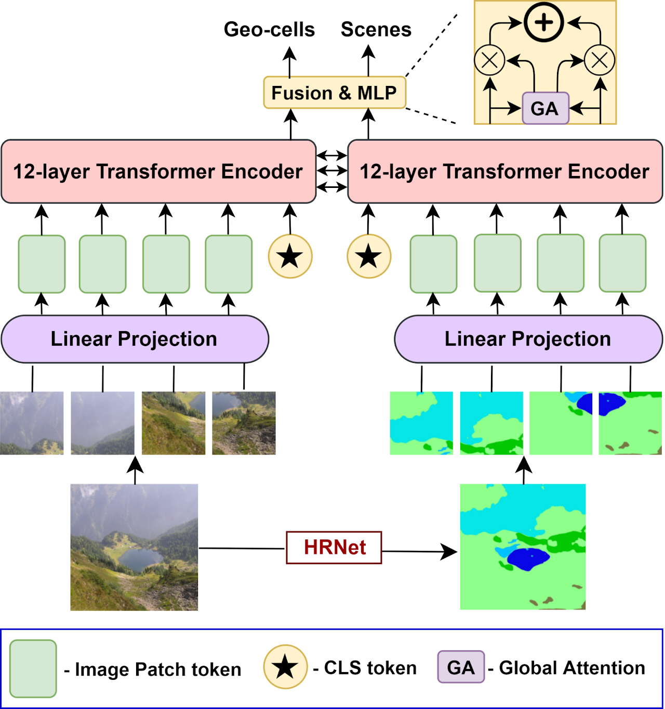
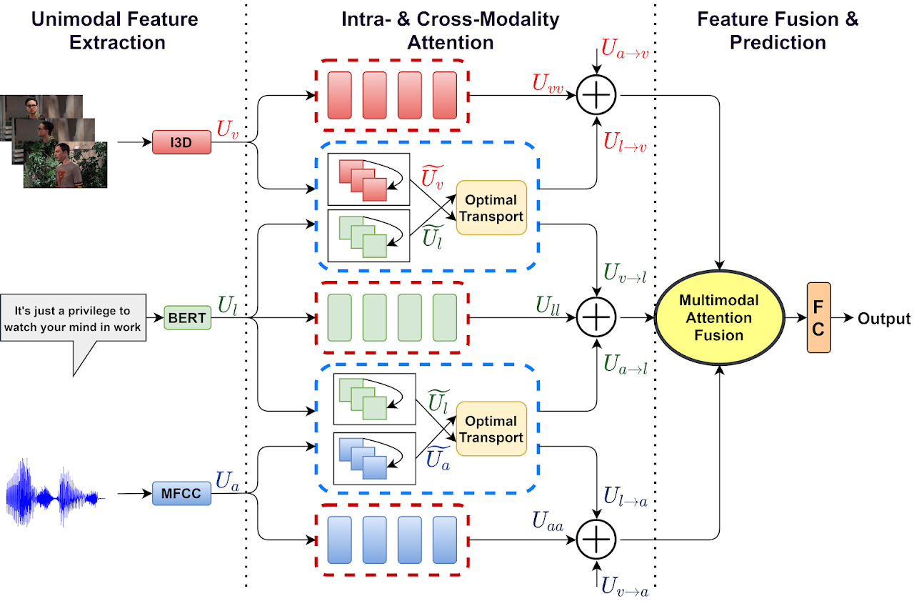
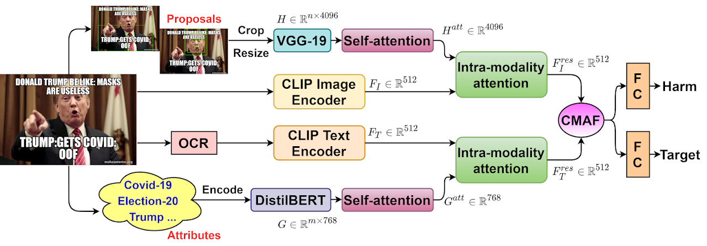
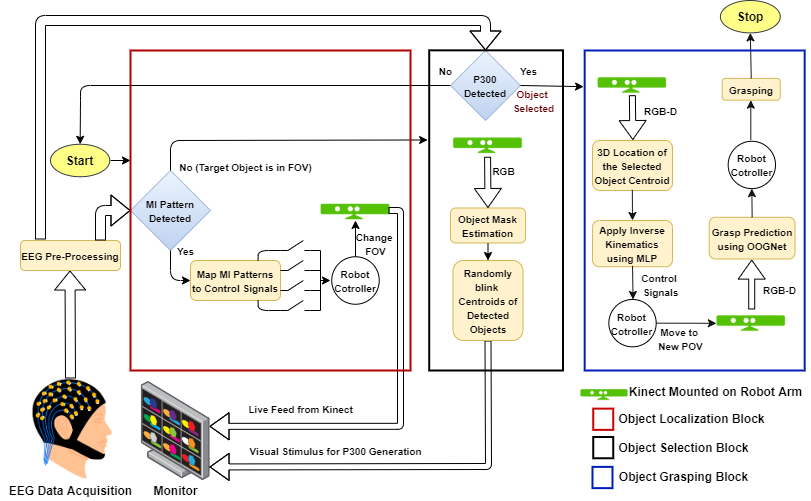
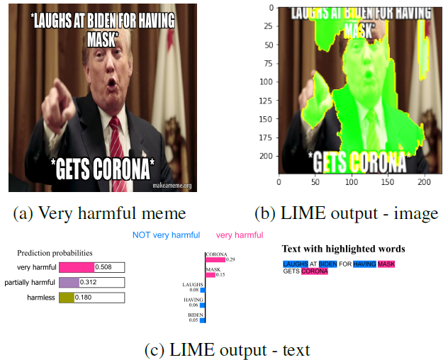
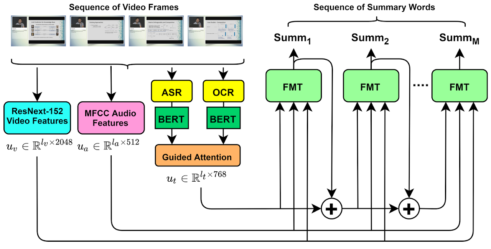

|
Shraman Pramanick
Hi, I am Shraman (pronounced as 'shra'--'man'). I received my Ph.D. at Johns Hopkins University, advised by Bloomberg Distinguished Professor Rama Chellappa. My research focuses on applications of deep learning and computer vision to multimodal learning (vision + X), egocentric vision and video-language pre-training.
I have been fortunate to work with amazing minds from academia and industry during my Ph.D. In the summer and fall of 2024, I interned at FAIR Perception, Meta with Daffy on fine-grained video temporal grounding. Previously, during the fall of 2023 and spring of 2024, I worked as a student researcher at Google Research with Subhashini on AI for Science. In the summer of 2023, I collaborated with Nicolas, Amjad, Guangxing, Qifan on multimodal large language models. I also contributed to the Ego-Exo4D project to develop strong baselines for different downstream applications. During the summer of 2022, I worked with Pengchuan and Yale on egocentric video-language pre-training. I also collaborated with Yann LeCun and Li Jing on dimension-contrastive image-text pre-training.
Before joining Hopkins, I worked as a research assistant in a series of collaborative projects between QCRI and IIIT-Delhi. During my undergrad days, I interned at the University of Montreal with Mitacs Globalink Fellowship in the summer of 2019. I graduated from Jadavpur University, India, in 2020 with my Bachelor's degree majoring in Electronics and Telecommunication Engineering.
Email /
Resume /
Google Scholar /
Github /
Twitter /
LinkedIn
|

|
|
News
- [June, 2025] ED-VTG is accepted in ICCV 2025 as a Highlights.
- [December, 2024] Invited talk on SPIQA at Voxel51 NeurIPS 2024 Preshow. Recording can be found here.
- [October, 2024] Invited lecture on Introduction to Transformers in EN.520.665 Machine Perception at Johns Hopkins. Recording can be found here.
- [September, 2024] SPIQA is accepted in NeurIPS 2024 D&B.
- [July, 2024] Joined FAIR, Meta as a returning research scientist intern. Working with Daffy, Efi, Yale and Lorenzo on fine-grained video temporal grounding.
- [June, 2024] EgoVLPv2 is awarded as an EgoVis (Egocentric Vision) 2022/2023 Distinguished Paper.
- [June, 2024] Received Spot Bonus from Google for exceptional contributions while being a student researcher.
- [April, 2024] VistaLLM is selected as a Highlight (Top 2.8%) and Ego-Exo4D is selected as an Oral (Top 0.8%) in CVPR 2024.
- [March, 2024] Selected to participate in Doctoral Consortium at CVPR 2024.
- [February, 2024] VistaLLM and Ego-Exo4D are accepted in CVPR 2024.
- [February, 2024] Invited talk at CCVL on EgoVLPv2 and VistaLLM. Recording can be found here.
- [December, 2023] Successfully passed the Graduate Board Oral (GBO) examination. Officially a Ph.D. candidate now. Thanks to my committee members Rama, Alan, Vishal, Abhinav and Anqi.
- [October, 2023] Joined Google Research as a student researcher. Working with Subhashini on AI for Science.
- [August, 2023] VoLTA is accepted in TMLR 2023.
- [July, 2023] EgoVLPv2 and UniVTG are accepted in ICCV 2023.
- [June, 2023] Received student researcher offer from Google Research for Fall 2023.
- [June, 2023] Joined Meta AI as a returning research scientist intern. Working with Nicolas, Amjad, Guangxing, Qifan and Rui.
- [February, 2023] 1 paper accepted in Biomedical Signal Processing and Control, Elsevier.
- [January, 2023] Received research internship offers from Meta AI (return), Microsoft Research, Adobe Research, Salesforce Research, and Samsung Research America for Summer 2023.
- [October, 2022] Attended ECCV 2022, and presented our work Where in the World is this Image? Transformer-based Geo-localization in the Wild.
- [July, 2022] 1 paper accepted in ECCV 2022.
- [May, 2022] Joined Meta AI as a research scientist intern. Working with Pengchuan, Li, Yale, and Yann.
- [January, 2022] Attended WACV 2022 in person at Waikoloa, Hawaii, and presented our work Multimodal Learning using Optimal Transport for Sarcasm and Humor Detection.
- [November, 2021] Received research internship offers from Meta AI, AWS AI, and Adobe Research for Summer 2022.
- [October, 2021] Received EMNLP volunteer fellowship and free registration in EMNLP 2021.
[October, 2021] 1 paper accepted in WACV 2022.
- [August, 2021] 1 paper accepted in Findings of EMNLP 2021.
- [July, 2021] Received ACL volunteer fellowship and free registration in ACL 2021.
- [May, 2021] 1 paper accepted in Knowledge-based Systems, Elsevier.
- [May, 2021] 1 paper accepted in Findings of ACL 2021.
- [March, 2021] 1 paper accepted in ICWSM 2021.
- [January, 2021] Joined Johns Hopkins University for my Ph.D. with ECE departmental fellowship, under the supervision of Professor Rama Chellappa.
- [June, 2020] Joined Qatar Computing Research Institute (QCRI), Doha as a Research Associate.
- [April, 2020] Received Ph.D. admission offers from 7 US Universities - JHU, GaTech, Purdue, UCR, Penn State, WashU St. Louis, and Yale.
- [January 2019] I have been selected as one of the Mitacs Globalink Research Interns 2019.
|
|
Research
Representative papers are highlighted.
|
|

|
Enrich and Detect: Video Temporal Grounding with Multimodal LLMs
Shraman Pramanick, Effrosyni Mavroudi, Yale Song, Rama Chellappa, Lorenzo Torresani, Triantafyllos Afouras
ICCV 2025
|
|
|

|
SPIQA: A Dataset for Multimodal Question Answering on Scientific Papers
Shraman Pramanick*, Rama Chellappa, Subhashini Venugopalan*
NeurIPS 2024 D&B
[Paper] [Code] [Dataset] [Poster]
|
|
|
|
Jack of All Tasks, Master of Many: Designing General-purpose Coarse-to-Fine Vision-Language Model
Shraman Pramanick*, Guangxing Han*, Rui Hou, Sayan Nag, Ser-Nam Lim, Nicolas Ballas, Qifan Wang, Rama Chellappa, Amjad Almahairi
CVPR 2024 (Highlight, Top 2.8%)
[Paper] [Project] [Code] [Poster]
|
|
|

|
Ego-Exo4D: Understanding Skilled Human Activity from First- and Third-Person Perspectives
Kristen Grauman et al.
CVPR 2024 (Oral, Top 0.8%)
[Paper] [Project] [Blog] [Video]
|
|

|
EgoVLPv2: Egocentric Video-Language Pre-training with Fusion in the Backbone
Shraman Pramanick, Yale Song, Sayan Nag, Kevin Qinghong Lin, Hardik Shah, Mike Z. Shou, Rama Chellappa, Pengchuan Zhang
ICCV 2023
[Paper] [Code] [Project] [Poster]
|
|
|
|
UniVTG: Towards Unified Video-Language Temporal Grounding
Kevin Qinghong Lin, Pengchuan Zhang, Joya Chen, Shraman Pramanick, Difei Gao, Alex JP. Wang, Rui Yan, Mike Z. Shou
ICCV 2023
[Paper] [Code]
|
|
|
|
VoLTA: Vision-Language Transformer with Weakly-Supervised Local-Feature Alignment
Shraman Pramanick*, Li Jing*, Sayan Nag*, Jiachen Zhu, Hardik Shah, Yann LeCun, Rama Chellappa
TMLR 2023
[Paper] [Code] [Project]
|
|
|

|
Where in the World is this Image? Transformer-based Geo-localization in the Wild
Shraman Pramanick, Ewa Nowara, Joshua Gleason, Carlos D. Castillo, Rama Chellappa
ECCV 2022
[Paper] [Code + Data] [Slides] [Poster] [Video]
|
|
|

|
Multimodal Learning using Optimal Transport for Sarcasm and Humor Detection
Shraman Pramanick*, Aniket Roy*, Vishal M. Patel
WACV 2022
[Paper] [Slides] [Poster] [Video]
|
|
|

|
MOMENTA: A Multimodal Framework for Detecting Harmful Memes and Their Targets
Shraman Pramanick*, Shivam Sharma*, Dimitar Dimitrov, Shad Aktar, Preslav Nakov, Tanmoy Chakraborty
Findings of EMNLP 2021
[Paper] [Code + Data] [Poster] [Slides]
|
|
|

|
Localizing and Grasping of 3-D Objects by a Vision-Actuated Robot Arm using Brain-Computer Interface
Arnab Rakshit, Shraman Pramanick, Anurag Bagchi, Saugat Bhattacharyya
Biomedical Signal Processing and Control, Elsevier, 2023
[Paper]
|
|
|

|
Detecting Harmful Memes and Their Targets
Shraman Pramanick, Dimitar Dimitrov, Rituparna Mukherjee, Shivam Sharma, Shad Aktar, Preslav Nakov, Tanmoy Chakraborty
Findings of ACL 2021
[Paper] [Code + Data] [Slides] [Video]
|
|
|

|
See, Hear, Read: Leveraging Multimodality with Guided Attention for Abstractive Text Summarization
Yash Atri*, Shraman Pramanick*, Vikram Goyal, Tanmoy Chakraborty
Knowledge-Based Systems, Elsevier, 2021
[Paper] [Code + Data]
|
|
|
|
Exercise? I thought you said ’Extra Fries’: Leveraging Sentence Demarcations and Multi-hop Attention for Meme Affect Analysis
Shraman Pramanick, Shad Aktar, Tanmoy Chakraborty
ICWSM 2021
[Paper] [Code] [Slides] [Poster]
|
|
|
Teaching
|
|
I have been worked as TA for the following courses:
-
Spring 2023: Machine Intelligence (EN.520.650), Johns Hopkins University
-
Spring 2022: Machine Intelligence (EN.520.650), Johns Hopkins University
|
|
Voluntary Services
|
|
I have reviewed for:
-
Conferences: CVPR, ICCV, ECCV, WACV, ARR, EMNLP, ACL
-
Jounrals: TPAMI, TNNLS, TIP, TAI, TAFFC, TMLR
|
|